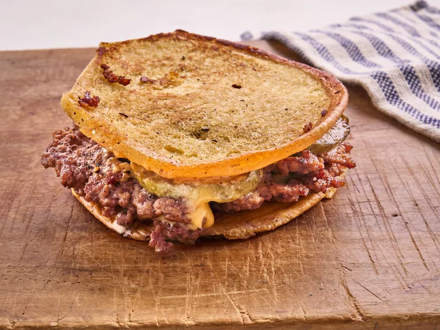

Pickle Crust Burger
Homepage

Description
This pickle crustburger is a multi-layered beauty with thin beef patties, pickle slices, American cheese, and a quick burger sauce on a golden, buttery pan-toasted bun.
Ingredients
- 1 tablespoon mayonnaise
- 1 teaspoon mustard
- 2 teaspoons ketchup
- 2 teaspoons pickle juice
- 1/2 tablespoon softened butter
- 1 potato hamburger bun
- 1/4 pound ground beef
- 1/4 teaspoon kosher salt
- 1/4 teaspoon freshly ground black pepper
- 3 refrigerated pickle slices, such as Grillos®
- 1 slice American cheese
Steps
- Stir mayonnaise, mustard, ketchup, and pickle juice together in a small bowl until well blended; set aside.
- Heat a large skillet over medium-high heat. Spread butter on the outside of the top and bottom bun halves; place bun halves buttered sides down in the skillet and press to flatten. Cook, until toasted, about 1 minute. Flip bun and toast on the other side, about 30 seconds, continuing to press to flatten. Place bun on a work surface with cut sides facing down. Spread desired amount of sauce over buns.
- Divide meat into 2 balled portions and place in a hot skillet. Using 2 spatulas, flatten meat to form a very thin patty. Season with salt and pepper. Cook, undisturbed, until a golden brown crust forms, and small holes appear around the edges.
- Use a spatula to carefully lift 1 patty from the pan. Place 3 pickle slices in the pan and flip burger patty on top of pickle slices. Top patty with cheese and flip second patty on top of the cheese. Scrape the burger from the skillet and place on bottom half of bbun. Place top bun on top with the cut side facing up and return the whole burger to the skillet. Cook and press each side, about 15 seconds. Serve immediately.